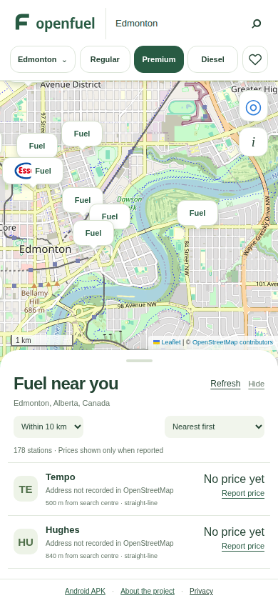

¢/L
The price, in context.
See when a price was shared. Missing prices stay blank until someone checks the pump.
An open-source fuel map for Canada. Find real stations near you, check community pump reports, and help fill the gaps.
Real station locations. Community prices, when reported.

The map stays in front. The details stay easy to reach. The project stays open to scrutiny.
See when a price was shared. Missing prices stay blank until someone checks the pump.
A compact station list, familiar controls and bottom sheets that leave room to explore.
Share a pump price and see it on another device. Every community report is clearly marked unverified.
We’re designing a review process for openings, corrections and closures. Suggestions become evidence. Verified changes become part of the map.
Pin the station. Describe what changed.
Check sources, duplicates and independent reports.
Keep the record. Allow corrections and appeals.
A native Android app and an Expo project connect to the same station database. SwiftUI source is also included for iPhone development.
The ambition is national. The next step is a carefully tested local launch.
Station locations are real OpenStreetMap records. Prices are unverified reports from people who checked the pump; a missing price stays blank. This is not a commercial live-price feed, and coverage may be incomplete.
Install the Kotlin / Jetpack Compose Android APK, or run the React Native Expo project in Expo Go. SwiftUI iPhone source is also included; building that app requires a Mac with Xcode.
The proposed model lets people suggest additions, edits and closures. Evidence is reviewed before changes reach the public map. A vote count alone does not delete a station.
Download the monorepo: website, Android, Expo and SwiftUI apps, Cloudflare API, D1 database migrations and tests. The repository guide explains how to run and contribute.
Start with the map. Help shape what comes next.
Open the app